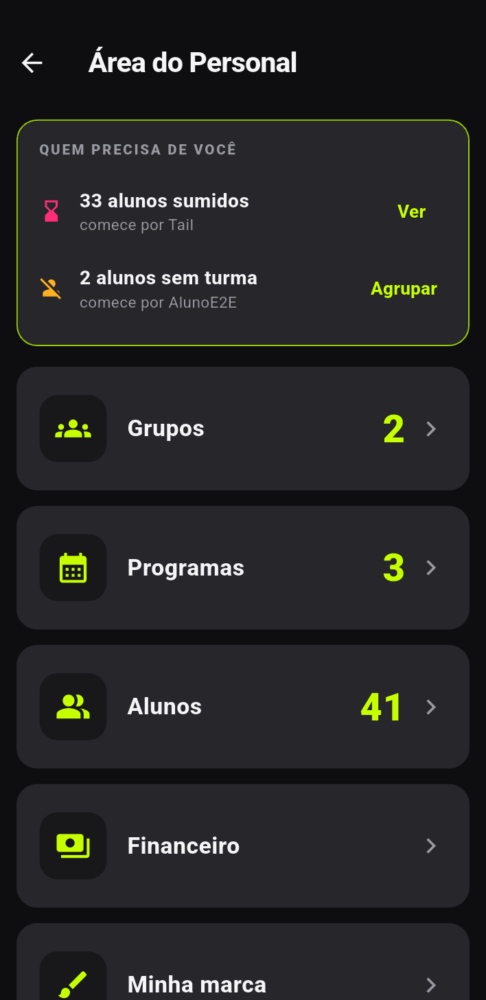
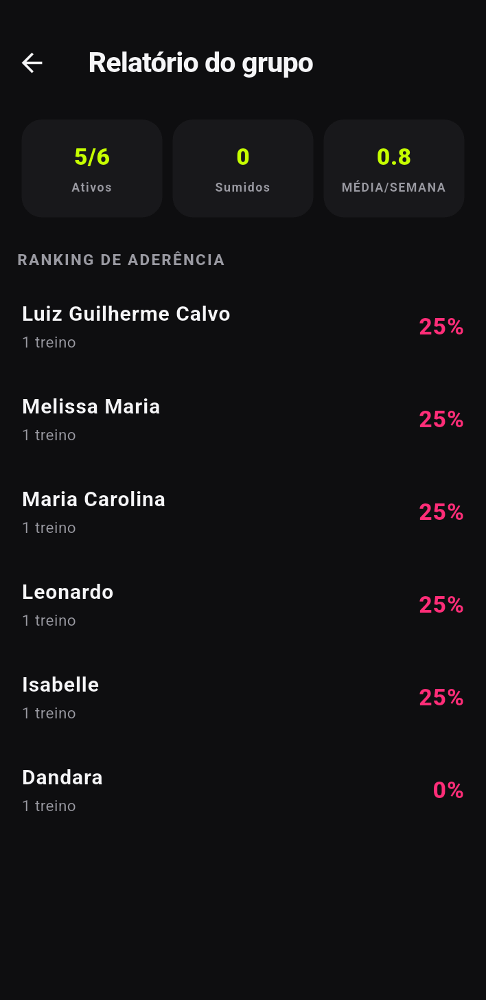
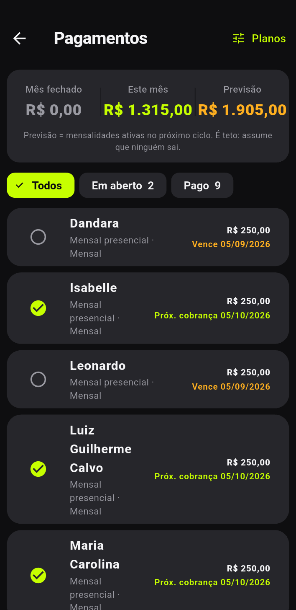
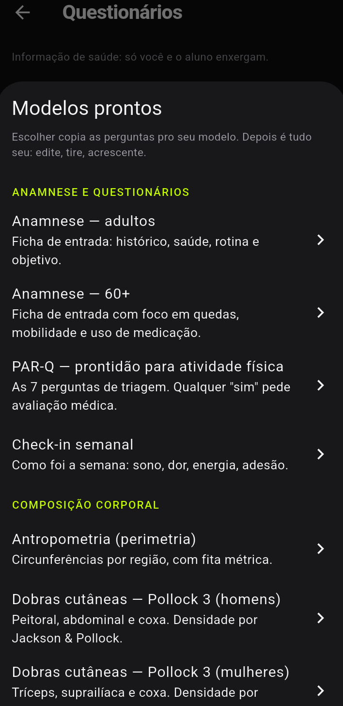
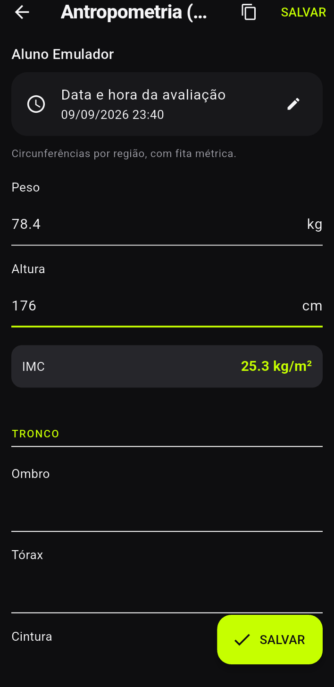
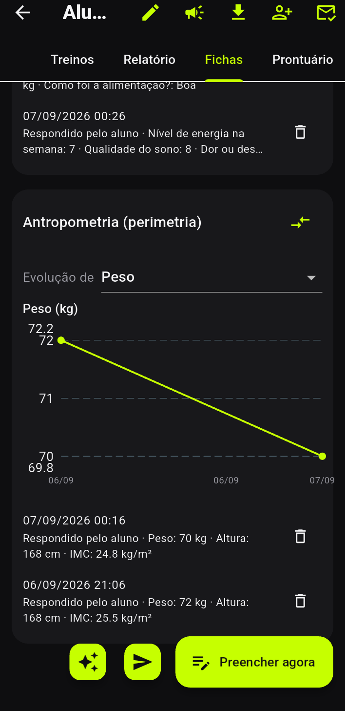
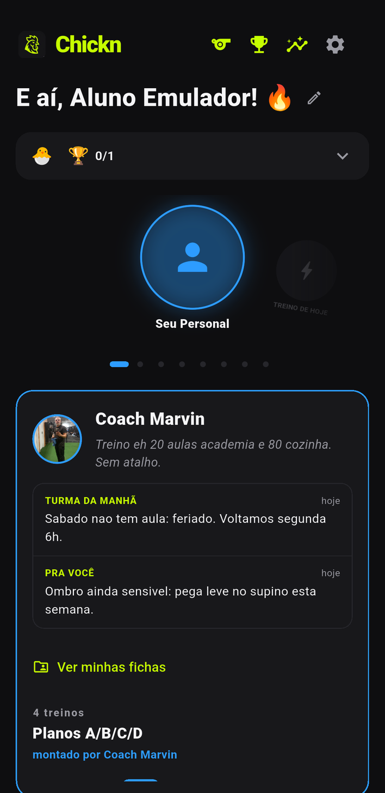

Ative o Modo Personal
Baixe o Chickn (App Store ou Google Play) e, na tela inicial, toque no ícone de apito 🐔 no topo — é o atalho do Modo Personal.
- Na pergunta “teu lado”, escolha Sou personal (coach).
- Entre com sua conta (Entrar com Google ou Apple) — o coaching sincroniza entre você e seus alunos, então precisa de login.
- Você cai na Área do Personal, com quatro blocos: Grupos, Programas, Alunos e Minha marca.

Também dá pra ligar em Configurações → “Sou personal trainer”.
Crie um programa
Na Área do Personal, abra Programas e toque em Novo programa.
- Dê um Nome do programa (ex.: “Treino da semana”).
- Adicione os treinos da semana com Novo treino — eles saem como Treino A, B, C…. Em cada um, ajuste o nome e o dia da semana (ou deixe “Qualquer dia”).
- Em cada treino, toque Adicionar exercício e defina Séries e Reps. Exercício de cardio pede minutos e km.
- Toque SALVAR.
O programa que você cria como coach fica pros seus alunos — ele não ativa no seu próprio “Treino de hoje”. Tocar no programa edita ele.
Monte um grupo e defina o programa
Grupos são a forma principal de entregar treino: cada grupo tem um programa ativo, e ele vale pra todos os alunos daquele grupo.
- Abra Grupos → Novo grupo, dê um Nome do grupo e toque Criar.
- Dentro do grupo, em Programa do grupo toque Definir e escolha o programa que você criou.
- Em ALUNOS DO GRUPO, marque quem faz parte. (Também dá pra adicionar pelo menu Adicionar a grupo na lista de alunos.)
Convide seus alunos
Abra Alunos → Adicionar aluno:
- Preencha o Nome do aluno (obrigatório) e, se quiser, o Email (opcional).
- Toque Convidar. O app gera um código de 8 caracteres e um QR code / link.
- Toque Compartilhar pra mandar pro aluno por WhatsApp — vai um textinho pronto com o código e o link.
No app do aluno, pra aceitar: apito no topo da home → Sou aluno → digita o código (ou escaneia o QR, ou abre o link chickn://vincular?code=…) → Aceitar convite. Pronto: vocês estão vinculados. 🐔
Acompanhe a execução
O que o aluno vê: um cartão SEU PERSONAL com a sua marca, os seus recados e as fichas dele — e, ao lado, um cartão DO SEU PERSONAL com o treino de hoje já pronto pra começar. Assim que ele aceita o vínculo, o seu programa entra sozinho: ele não precisa escolher nada. O programa que ele montou sozinho e o seu convivem em cartões separados — um nunca atrapalha o outro.
O que você vê:
- No aluno, aba Treinos: acompanhamento com total, treinos na semana, volume (kg) e o RPE de cada série. Dá pra Registrar treino pelo aluno e exportar CSV.
- No aluno, aba Relatório: frequência, aderência e progressão.
- No grupo, Relatório do grupo: quem treinou na semana, ranking de aderência e a lista de “sumidos” (parados há mais de 5 dias).


Avalie: questionários, fichas e prontuário
Na Área do Personal, abra Questionários. É aqui que mora a anamnese, o PAR-Q, a avaliação física, o check-in da semana — e qualquer outra ficha que você já use no papel.
1. Monte o modelo — de três jeitos:
- Modelos prontos: 21 modelos em 5 famílias (anamnese, composição corporal, condicionamento, funcional e sinais vitais). Escolher copia as perguntas pro seu modelo — depois é tudo seu: edite, tire, acrescente.
- Importar questionário: manda o print, o PDF ou o texto da ficha que você já usa e a IA monta os campos. Você revisa antes de salvar.
- Modelo em branco: Adicionar pergunta, escolha o Tipo (texto, número com unidade, escala, sim/não, escolha, data, título de seção ou calculado) e pronto.
2. Deixe o app fazer a conta — num campo Calculado, toque Escolher da biblioteca: 35 fórmulas com a fonte do protocolo do lado (Pollock, Jackson & Ward, Faulkner, Petroski, Siri, Brozek, Mifflin-St Jeor, Harris-Benedict, Cooper, Tanaka, Karvonen, Brzycki, Epley, Wells, TUG, SPPB). O app escreve a expressão e cria sozinho as perguntas que faltam pra ela funcionar.
3. Dispare — toque Enviar:
- Um aluno ou Uma turma — a turma inteira de uma vez.
- Prazo para responder e Repetir toda semana (um disparo novo nasce sozinho a cada 7 dias — o check-in não depende de você lembrar).
- Aluno que ainda não usa o app? O Chickn avisa e oferece Enviar por email (ele responde o email, a resposta cai na sua caixa) ou Preencher eu mesmo, pra avaliação presencial.
4. A ficha volta — o aluno vê “questionários pra responder” na home dele e toca Responder. Respondeu por email? Abra o aluno → aba Fichas → Importar resposta, cole o email e a IA preenche os campos pra você conferir.
- Na aba Fichas fica o histórico do aluno, com Evolução de — escolha a medida e veja a linha.
- Comparar avaliações põe duas fichas lado a lado: Antes, Depois e a diferença. Dá pra compartilhar como imagem direto no WhatsApp.
- Copiar da última ficha traz os valores anteriores pra você só corrigir o que mudou.
- Na aba Prontuário, Nova anotação: dor, lesão, viagem, falta — com a data do ocorrido. É o que explica o número três meses depois. Você decide se o aluno vê.




Dado de saúde é sério: só você e o aluno enxergam a ficha dele, nada disso entra em estatística nem vai pra IA sem você mandar, e o app calcula mas não classifica — mostra a tabela publicada com a fonte e deixa a leitura com você. Se o vínculo for desfeito, as fichas de saúde ficam 90 dias e depois são apagadas.